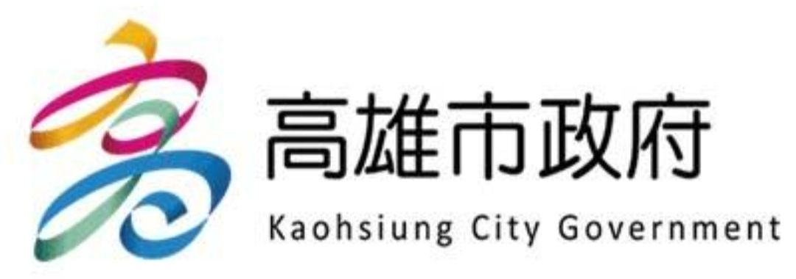
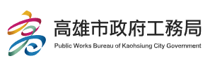
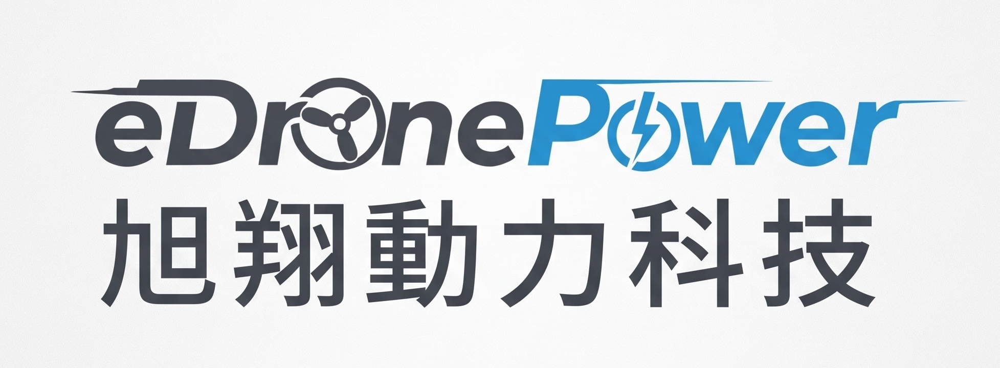
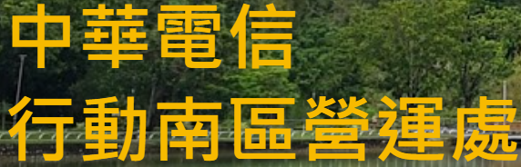

圖片說明：高雄市政府代表城市治理與公共服務場域， 推動數位科技應用於城市永續發展。

圖片說明：高雄市工務局負責公共工程與城市建設， 分享智慧治理及工程場域的實務經驗。
圖片說明：中華電信學院聚焦通訊技術、人才培訓與產業交流， 支援數位轉型與韌性網路發展。
圖片說明：網分固網處展示固網與通訊基礎建設， 探討關鍵服務在災害情境下的持續運作能力。
圖片說明：研究院數位創新所呈現數位模型、資料分析與創新科技， 協助技術落地於實際應用場景。
圖片說明：展示 AI、無人機與資料應用於企業治理、 環境管理及 ESG 實務的可能性。

圖片說明：展示無人機 AI 視覺辨識、模擬訓練與實際部署， 連結虛擬模型與真實場域。

圖片說明：展示行動通訊設備、無人機基地台與衛星通訊車， 說明偏遠或緊急場域的通訊支援方式。